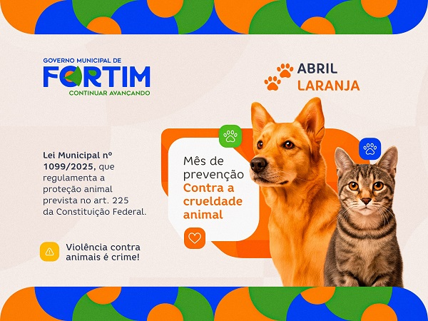

Leis de proteção aos animais
O Brasil possui diversas leis que visam proteger os animais e punir aqueles que cometem maus-tratos. A legislação é fundamental para garantir o bem-estar dos animais e promover uma convivência mais harmoniosa entre humanos
e animais. Conhecer essas leis é importante para que possamos agir de forma consciente e responsável, contribuindo para a proteção dos animais em nossa sociedade.
|
 |
Lei Sansão:Esta imagem apresenta a Lei nº 14.064/2020, conhecida como Lei Sansão, que aumentou a punição para maus-tratos contra cães e gatos. A pena pode chegar de 2 a 5 anos de prisão, além de multa e proibição de guarda do animal. |
|
|
Conscientização contra a crueldade animal:Esta imagem simboliza a luta contra a crueldade animal, destacando a importância de leis rigorosas para proteger os animais. O símbolo de proibição reforça a mensagem de que maus-tratos não são aceitáveis e que a sociedade deve se unir para garantir o bem-estar dos animais. |
As penalidades para maus-tratos contra animais são previstas em lei e podem variar de acordo com a gravidade do caso. Entre as principais punições, estão:
Essas medidas têm como objetivo combater a violência e garantir a proteção e o bem-estar dos animais.
Se você presenciar maus-tratos, é importante denunciar. Você pode procurar:
Denunciar é essencial para proteger os animais e garantir que a lei seja cumprida.
A participação da sociedade é fundamental para o sucesso das leis de proteção animal. Quando as pessoas se envolvem, denunciam abusos e apoiam a causa, a proteção dos animais se torna mais eficaz. A conscientização e a ação coletiva são essenciais para criar um ambiente mais seguro e respeitoso para os animais em nossa sociedade.